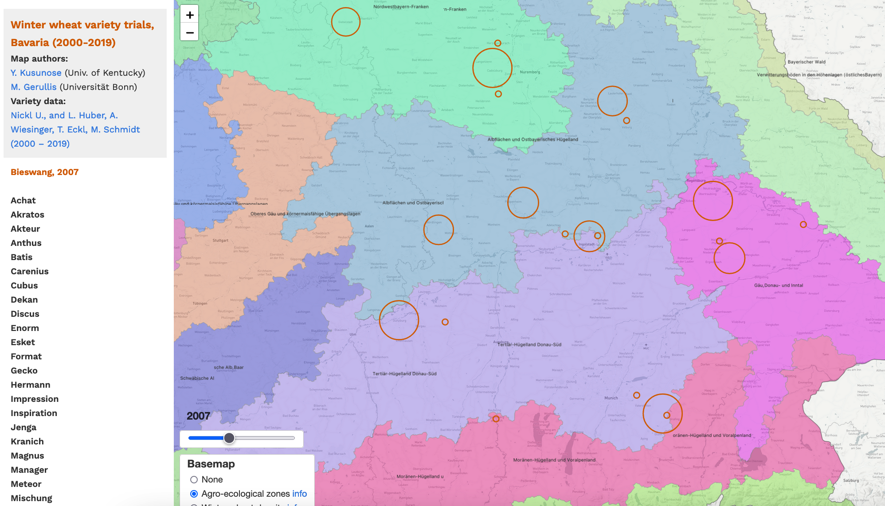
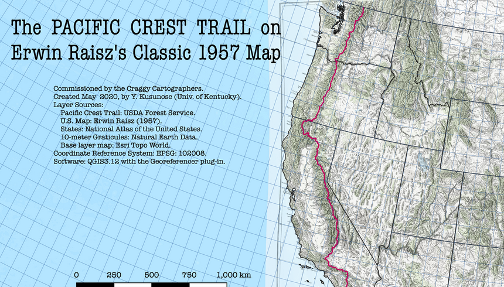

Wheat Variety Trials
Which parts of Bavaria (in Germany) produce the most 'data' in terms of yield performance for winter wheat? Is data being collected where it ought to be?
Mapping resources: Leaflet, geojson.io, Mapshaper, Mapbox

Lexington Food Access
Does everybody in Lexington, Kentucky have the means to purchase food? How do we measure 'food access?'
Mapping resources: QGIS3.12, Google Maps, CARTO

Pacific Crest Trail
Can you imagine illustrating a map of by the United States by hand? That's what Erwin Raisz did.
Mapping resources: QGIS3.12 with Georeferencer, Esri Topo World, Natural Earth Data
Washington Waterways
Who were the armies of people who catalogued each of these waterbodies, where they run, and their streamflow?
Mapping resources: QGIS3.12